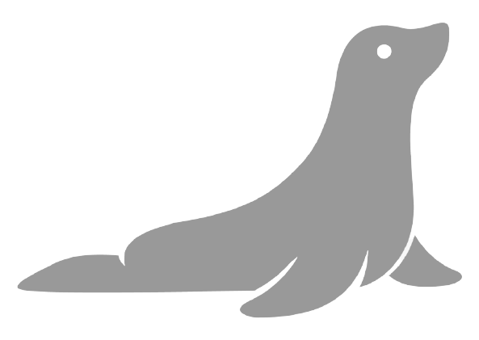

<mat-toolbar class="nav-bar">
  
  <span> STSBlogging </span>
  <span class="spacer"></span>
  <button *ngIf="loggedIn" mat-icon-button class="profile-icon" (click)="openProfileDialog()">
    <mat-icon>account_box</mat-icon>
  </button>
  <button mat-icon-button class="auth-icon" (click)="toggleLogin()">
    <mat-icon>{{ action }}</mat-icon>
  </button>
</mat-toolbar>
